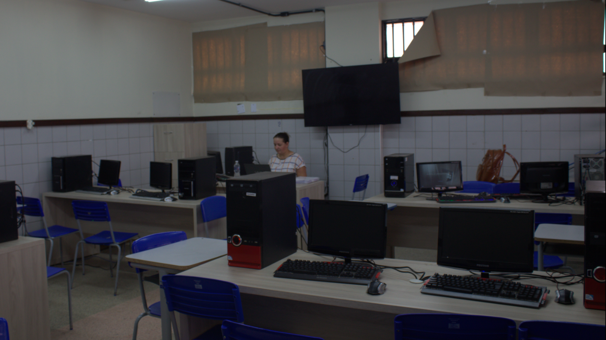
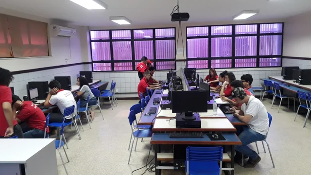

A informática é um campo de estudo e prática que se concentra no processamento, armazenamento e
transmissão de
informações por meio de computadores e sistemas de computação. Envolve o uso de hardware (componentes
físicos do
computador, como CPU, memória, disco rígido, etc.) e software (programas e aplicativos) para realizar uma
variedade de
tarefas relacionadas à manipulação de dados e informações.